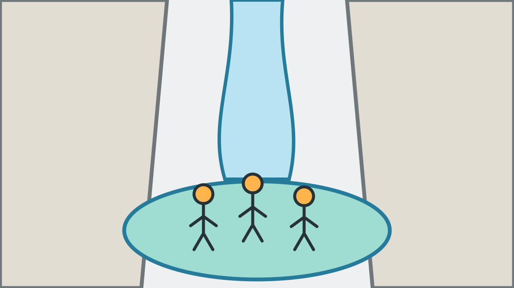

Canyoning Tessin: euer privates JGA-Abenteuer
Schwierigkeit 4 von 5 · Dauer je nach Tour · Preis auf Anfrage · Private Tour
Das Tessin ist die Spezialoption für sehr ambitionierte, sehr fitte JGAs, die ein außergewöhnliches Erlebnis suchen. Heller Granit, klares Wasser, tief ausgeschliffene Becken und sogar Heli-Canyoning machen jede individuell gewählte Schlucht besonders.
Tour auf einen Blick
- Gesamtdauer
- je nach gewählter Tour
- Abseilen
- bis 80 Meter möglich
- Rutschen
- bis 20 Meter möglich
- Springen
- freiwillig bis 20 Meter möglich
- Schwimmstrecken
- bis 50 Meter möglich
- Voraussetzungen
- Sehr gute Fitness, sichere Schwimmkenntnisse, Trittsicherheit und hohe Bereitschaft für ein anspruchsvolles Abenteuer
Was wir vorab mit euch klären
- Wunschtermin und ungefähre Personenzahl.
- Canyoning-Erfahrung, Fitness und Erwartungen.
- Geeigneter Canyon und Alternativen bei veränderten Bedingungen.

Euer Sorglos-Paket
Die genannten Maximalwerte sind je nach ausgewählter Schlucht möglich, aber kein Standardversprechen für jede Tour. Den genauen Ablauf, Treffpunkt und Preis klären wir im direkten Kontakt. Ab dem vereinbarten Treffpunkt organisieren wir Ausrüstung, Führung, Tour, Fotos, Videos sowie Snack und Getränke nach der Tour. Ihr bringt nur Badekleidung, Handtuch und Wechselkleidung mit.